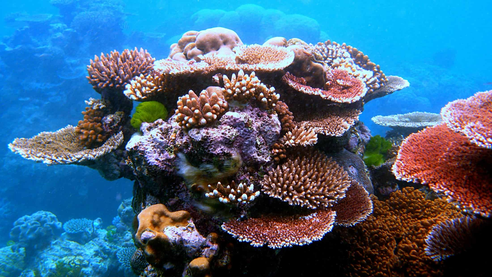

Конкурс для школьников на тему "Забота об экосистеме океана"
Описание
Конкурс посвящен заботе об экосистеме океана. Весь мир обеспокоен загрязнением океана, которое угрожает морской живности, нашей окружающей среде, экономике и здоровью людей.
Тем не менее, в прошлом году было много сделано для сбережения океана: в некоторых городах запрещено использовать полиэтиленовые пакеты, созданы новые районы для охраны моря. Организация Bow Seat понимает насколько важно вырастить молодых охранников океана и их цель вдохновить молодежь на поиски инновационных решений относительно загрязнений.
Конкурсанты могут сами определить какой тип работы подавать на участие в конкурсе, но работа должна быть направленна на решение проблемы загрязнения океана, это может быть: рисунок, стих, сочинение, или видео. Основное задание – привлечь внимание слушателей, читателей, или зрителей к проблеме загрязнения океана, вдохновить их на рассмотрение возможных вариантов решения проблемы, и побудить их действовать в этом направлении.
Призы:
Участники, занявщим I, II и III места, будут высланы дипломы, в электронном варианте, на E-mail указанынй в бланке участника.
Все участники, не занявщие призовые места, получат поощрительный приз - грамоту участника.
Требования к участникам:
В конкурсе могут принимать участие:
- Группы (до 8 человек), или одиночные участники;
- Ученики 6-9 классов и ученики 10-11 классов;
Участие в конкурсе бесплатное, для участия необходимо отправить бланк участника. У учеников должен быть куратор, обычно в роли куратора выступает школьный учитель или один из учеников. Все работы должны быть уникальными и оригинальными.